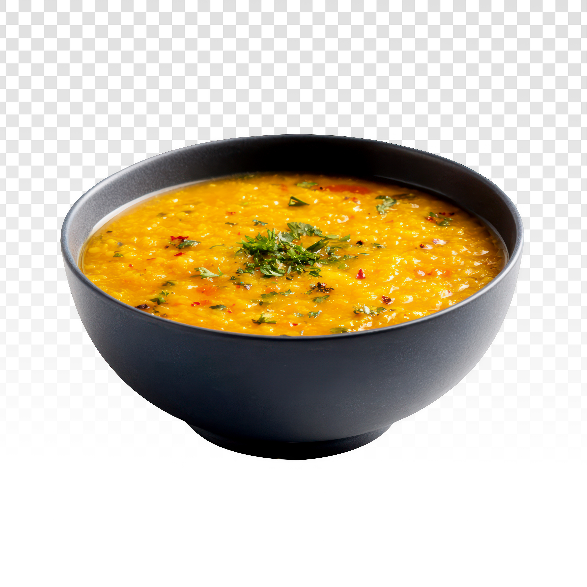

Indian Style Lentil Soup

A comforting, protein-rich staple found in nearly every indian household. It features creamy, slow-simmered lentils finished with a "tadka", a quick flash of hot, aromatic butter infused with garlic and spices poured over the top right before serving.
Ingredients:
For the Lentils:
- 1 cup yellow split peas
- 3 cups water
- 1/2 tsp turmeric powder
- 1 tsp salt
For the Masala Base:
- 2 tbsp oil (optional: vegetable oil)
- 1 medium onion (finely chopped)
- 1 inch fresh ginger (minced)
- 2 cloves garlic (minced)
- 2 medium tomatoes (chopped)
For the Tadka (Tempering):
- 1 tbsp butter (or clarified butter)
- 1 tsp cumin seeds (or ground cumin)
- 2 cloves garlic (sliced thin)
- 1/2 tsp chili flakes (or black pepper)
Instructions:
- Rinse the Lentils: Wash the lentils under cold water until the water runs clear.
- Boil the Lentils: Place the rinsed lentils, water, turmeric powder, and salt into a pot. Bring to a boil, then reduce heat to low, cover, and simmer for 15 minutes until the lentils are soft and creamy.
- Cook the Aromatics: While the lentils cook, heat 2 tablespoons of oil in a separate pan over medium heat. Add the chopped onions, minced ginger, and minced garlic. Sauté for 5 minutes until golden brown.
- Build the Flavor: Add the chopped tomatoes to the pan. Cook for 4 to 5 minutes, pressing down on the tomatoes until they soften and blend completely with the onions.
- Combine: Pour this cooked tomato-onion mixture directly into the pot of boiled lentils. Stir well and let everything simmer together on low heat for 2 minutes.
- Prepare the Tempering: In a small pan or ladle, melt the butter over medium heat. Add the cumin seeds, sliced garlic, and chili flakes. Let them sizzle for exactly 20 to 30 seconds until the garlic turns lightly golden.
- Flash and Serve: Pour the hot, sizzling butter mixture directly over the cooked lentils. Stir gently and serve warm.
Back to Home